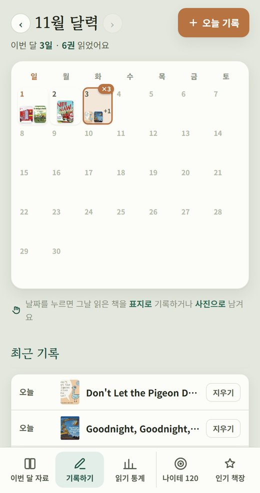

제가 하면서 힘들었던 거, 하나씩 채우는 중이에요
무슨 책 살지, 어떻게 읽어줄지, 꾸준히 하는 것까지 쉽지 않더라고요. 본업이 개발자라 스터디 엄마들이 필요하다는 걸 앱으로 하나씩 만들고 있어요.
인플루언서 추천보다, 같이 하는 엄마들 다수가 재밌다는 책이 찐 대박책 아닐까? 싶어서 😆 재밌어요랑 후기도 넣었어요.— 드니맘 📝 블로그에 더 길게 썼어요 →
안녕하세요, 드니맘이에요 :)
보통 유료인 엄마표영어 스터디, 저는 무료로 같이 하고 싶었어요. 24개월 동안 120권, 매달 5권씩 같이 읽어요.
무료 · 1권만 있어도 시작해요
무슨 책 살지, 어떻게 읽어줄지, 꾸준히 하는 것까지 쉽지 않더라고요. 본업이 개발자라 스터디 엄마들이 필요하다는 걸 앱으로 하나씩 만들고 있어요.
인플루언서 추천보다, 같이 하는 엄마들 다수가 재밌다는 책이 찐 대박책 아닐까? 싶어서 😆 재밌어요랑 후기도 넣었어요.— 드니맘 📝 블로그에 더 길게 썼어요 →
다 못 구해도 1권만 있으면 시작할 수 있어요.
※ 책을 누르면 열리는 쿠팡 링크는 쿠팡 파트너스 활동의 일환으로, 이에 따른 일정액의 수수료를 제공받습니다.
저 영알못 엄마예요 ㅎㅎ 근데 5년 동안 영어책만 팠더니 남들보다는 좀 더 알게 됐어요. 그래서 고심해서 골랐어요. 따로 알아보지 않고 120권만 따라와도 충분하게, 주제도 유형도 다양하게 넣었어요.
그리고 제일 중요한 거, 재밌는 책만 골랐어요.

실제 앱 화면(예시)수준 맞춰 줄 세우기보다, 다양한 이야기를 만날 수 있는 책을 골라요.
네, 다 무료예요. 5권 고르는 것도, 스터디 자료도, 기록 앱도요. 책은 도서관에서 빌려도 되고 갖고 싶은 것만 사셔도 돼요.
보통 엄마표영어 스터디는 유료더라고요. 저는 최대한 많은 엄마들이 같이 했으면 해서 무료로 하고 있어요.
그럼요. 저도 영알못 엄마예요 ㅎㅎ 읽어주는 법이랑 Read Aloud 영상이 있어서 먼저 들어 보고 읽어 주면 돼요.
파닉스 떼기 전 아이들이요. 0세부터 초등 저학년까지, 엄마가 읽어주는 그림책이에요.
아니요. 도서관에서 빌려도 되고, 5권 다 못 구해도 괜찮아요. 1권만 있어도 시작할 수 있어요.
아니요. 이번 달 책, 스터디 자료, 기록 앱은 누구나 쓸 수 있어요. 다른 엄마들이랑 같이 인증하고 물어보고 싶을 때 스터디방 들어오시면 돼요.
매달 새 주제로 시작해서 언제 들어와도 괜찮아요. 이번 달 책 1권부터 읽어 보세요.
편한 곳 하나만 골라도 괜찮아요.